5: Investigating vegetation demographics with FATES#
BEFORE BEGINNING THIS EXERCISE - Check that your kernel (upper right corner, above) is NPL 2023a. This should be the default kernel, but if it is not, click on that button and select NPL 2023a.
FATES output#
As we described above, when run in higher complexity modes (i.e., not SP mode) FATES simulates more than just GPP and other biophysical fluxes. It also simulates vegetation demography (e.g., growth, allocation, competition, mortality, etc.) over time. This means we can look at really interesting outputs like vegetation structure (sizes and PFTs of trees), canopy closure, and successional dynamics.
We have already run a simulation at a NEON site: Bartlett Experimental Forest (BART). BART is a terrestrial NEON field site located within the Saco River Valley of the White Mountain National Forest in Carroll County, New Hampshire. Climate and glacial till soil make BART an ideal area for old-growth northern deciduous hardwoods consisting of beech (Fagus sp.) and sugar maple (Acer saccarum). White pines (Pinus strobus) are dispersed throughout the site but are primarily found in lower elevations. Softwood trees such as hemlock (Tsuga canadensis), balsam fir (Abies balsamea), and spruce are frequently found on cool steep slopes or in lower elevations with poor drainage.
For more information about BART, see the NEON webpage for the site.
For this simulation, we ran FATES in fixed biogeography mode, but ran two simulations:
with FATES initialized with inventory data from NEON and run for 10 years
with FATES run from bare ground and run for 100 years
For information on how to do inventory initialization with FATES, see the online documentation.
As before, start by loading some packages
import os
import xarray as xr
import numpy as np
import matplotlib.pyplot as plt
import matplotlib.colors as mcolors
import matplotlib.cm as cm
from matplotlib.ticker import FuncFormatter
%matplotlib inline
Helper functions#
These are a few helper functions that we will use in this notebook.
def annual_sum(raw_values: xr.DataArray, conversion_factor: float = 1.0) -> xr.DataArray:
"""Computes annual sum
Args:
raw_values (xr.DataArray): input raw data
conversion_factor (float, optional): conversion factor. Defaults to 1.0
Returns:
xr.DataArray: annual sum output
"""
months = raw_values["time.daysinmonth"]
return conversion_factor * (months * raw_values).groupby("time.year").sum()
def annual_mean(raw_values: xr.DataArray, conversion_factor: float = 1.0) -> xr.DataArray:
"""Computes weighted annual mean using daysinmonth for missing-aware inputs.
Args:
raw_values (xr.DataArray): input raw data
conversion_factor (float, optional): conversion factor. Defaults to 1.0
Returns:
xr.DataArray: annual mean output
"""
months = raw_values["time.daysinmonth"]
# multiply by number of days in month and conversion factor
weighted = (raw_values * conversion_factor) * months
# compute number of valid days per year
valid_days = months.where(raw_values.notnull())
# group and sum weighted data and valid days
ann_sum = weighted.groupby("time.year").sum(dim="time", skipna=True)
days_per_year = valid_days.groupby("time.year").sum(dim="time", skipna=True)
return ann_sum / days_per_year.where(days_per_year > 0.0)
1. Reading and formatting data#
Note: all exercises below make use of pre-run simulations located in /glade/campaign/cesm/tutorial/diagnostics_tutorial_archive/.
1.1. Reading in the data#
prestage_dir = "/glade/campaign/cesm/tutorial/diagnostics_tutorial_archive/fates.BART"
inv_file = os.path.join(prestage_dir, "i.fates.BART.inv.nc")
bg_file = os.path.join(prestage_dir, "i.fates.BART.bareground.nc")
ds_inv = xr.open_dataset(inv_file).isel(lndgrid=0)
ds_bg = xr.open_dataset(bg_file).isel(lndgrid=0)
Because this is a single site, and not a regional or global run, we can just grab the one gridcell with .sel(lndgrid=0), and we additionally don’t need to multiply any of the FATES variables by FATES_FRACTION, because we just assume the gridcell is completely naturally vegetated.
# print information about the inventory-initialized dataset
ds_inv
1.2 FATES multi-plexed dimensions#
Before we plot the simulations, we will go over a FATES-specific feature of its history output.
A single FATES variable can be resolved across several categorical axes at once (e.g., size class, plant functional type (PFT), canopy layer, patch age, etc.) FATES writes these out by multiplexing: when it writes the file, it flattens a pair (or more) of these category axes into one packed dimension.
You can read which axes are packed into a variable using its name. One of the variables we’ll start with, FATES_NPLANT_SZPF (number of plants), carries the SZPF suffix. It has been flattened across size class (SZ) and PFT (PF) onto a single dimension, fates_levscpf, whose length is n_sizeclass * n_pft. So instead of a tidy (time, fates_levscls, fates_levpft) array, what’s actually on the file is (time, fates_levscpf), with the two categories interleaved along one axis. This is not really useful in its raw form because we can’t select, say, “10–20 cm trees” or “broadleaf deciduous trees” until we split the multiplexed axis back into its two actual dimensions.
The helper functions below uses information about each individual dimension to unstack fates_levscpf back into separate size-class and PFT dimensions.
def deduplex(ds: xr.Dataset, da: xr.DataArray, dim1_short: str, dim2_short: str, preserve_order: bool = True) -> xr.DataArray:
"""Reshape a duplexed FATES dimension into its constituent dimensions
Args:
ds (xarray Dataset): Dataset containing the variable with dimension to de-duplex
da (xr.DataArray): (Name of) variable with dimension to de-duplex
dim1_short (str): Short name of first duplexed dimension. E.g., when de-duplexing
fates_levagepft, dim1_short=age.
dim2_short (str): Short name of second duplexed dimension. E.g., when de-duplexing
fates_levagepft, dim2_short=pft.
preserve_order (bool, optional): Preserve order of dimensions of input DataArray? Defaults
to True. Might be faster if False.
Returns:
xr.DataArray: the deduplexed output
"""
if dim1_short == dim2_short:
raise ValueError("deduplex() can't currently handle dim1_short==dim2_short")
dim_combined = _get_dim_combined(dim1_short, dim2_short)
if dim_combined not in da.dims:
raise NameError(
f"Dimension {dim_combined} not present in DataArray with dims {da.dims}"
)
dim1 = _get_check_dim(dim1_short, ds)
dim2 = _get_check_dim(dim2_short, ds)
n_dim1 = len(ds[dim1])
da_out = (
da.rolling({dim_combined: n_dim1}, center=False)
.construct(dim1)
.isel({dim_combined: slice(n_dim1 - 1, None, n_dim1)})
.rename({dim_combined: dim2})
.assign_coords({dim1: ds[dim1]})
.assign_coords({dim2: ds[dim2]})
)
if preserve_order:
new_dim_order = []
for dim in da_out.dims:
if dim == dim2:
new_dim_order.append(dim1)
if dim != dim1:
new_dim_order.append(dim)
da_out = da_out.transpose(*new_dim_order)
return da_out
def _get_dim_combined(dim1_short: str, dim2_short) -> str:
"""Get duplexed dimension name, given two short names
Args:
dim1_short (str): Short name of first duplexed dimension. E.g., when de-duplexing
fates_levscpf, dim1_short=scls.
dim2_short (str): Short name of second duplexed dimension. E.g., when de-duplexing
fates_levscpf, dim2_short=pft.
Returns:
str: duplexed dimension name
"""
dim_combined = "fates_lev" + dim1_short + dim2_short
# handle further-shortened dim names
if dim_combined == "fates_levcanleaf":
dim_combined = "fates_levcnlf"
elif dim_combined == "fates_levcanpft":
dim_combined = "fates_levcapf"
elif dim_combined == "fates_levcdamscls":
dim_combined = "fates_levcdsc"
elif dim_combined == "fates_levsclsage":
dim_combined = "fates_levscag"
elif dim_combined == "fates_levsclspft":
dim_combined = "fates_levscpf"
return dim_combined
def _get_check_dim(dim_short: str, dataset: xr.Dataset) -> str:
"""Get dim name from short code and ensure it's on Dataset
Probably only useful internally to this module; see deduplex().
Args:
dim_short (str): The short name of the dimension. E.g., "age"
dataset (xr.Dataset): The Dataset we expect to include the dimension
Raises:
NameError: Dimension not found on Dataset
Returns:
str: The long name of the dimension. E.g., "fates_levage"
"""
dim = "fates_lev" + dim_short
if dim not in dataset.dims:
raise NameError(
f"Dimension {dim} not present in Dataset with dims {dataset.dims}"
)
return dim
2. Starting familiar: canopy fluxes and leaf area#
Before we use any of FATES’s structural detail, let’s look at output that any land model (including CLM’s default big-leaf vegetation) would produce: the seasonal cycles of GPP and LAI. Averaged across all years of the inventory-initialized run, these show the forest as one canopy, with deciduous leaves flushing in spring, carbon uptake peaking in summer, and both falling off through autumn.
# seasonal climatology: average each calendar month across all years
gpp_clim = ds_inv["FATES_GPP"].groupby("time.month").mean()*86400*1e3 # gC/m2/day
lai_clim = ds_inv["FATES_LAI"].groupby("time.month").mean()
months = gpp_clim["month"].values
fig, ax1 = plt.subplots(figsize=(8, 4.5))
l1 = ax1.plot(months, gpp_clim.values, color="#2E6E5E", marker="o", label="GPP")
ax1.set(xlabel="Month", ylabel="GPP (gC m$^{-2}$ day$^{-1}$)")
ax2 = ax1.twinx()
l2 = ax2.plot(months, lai_clim.values, color="#9CA86E", marker="s", label="LAI")
ax2.set_ylabel("LAI (m$^2$ m$^{-2}$)")
ax1.set_xticks(range(1, 13))
lines = l1 + l2
ax1.legend(lines, [line.get_label() for line in lines], loc="upper left")
ax1.set_title("Seasonal cycle of GPP and LAI")
fig.tight_layout()
Click here for the solution
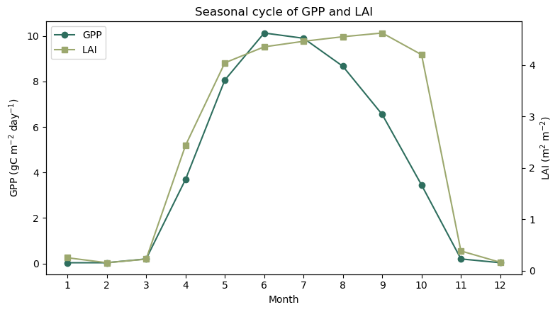
Figure: GPP and LAI climatology for our inventory-initialized case.
Questions:#
How do GPP and LAI track each other through the year? Which leads the other in spring, and does that make physical sense?
Does LAI fall all the way to zero in winter? What does the residual tell you about the mix of plant functional types at this site? (think back to which PFTs grow at BART.)
3. What’s growing at BART? PFT composition#
Next, let’s investigate BART’s PFT composition. Remember that we ran these simulations in “fixed biogeography mode.”
Remember that fixed biogeography mode means that we allow PFTs to compete with each other, but restrict which PFTs can grow at each site.
For our runs, we only allowed two PFTs to grow: broadleaf deciduous (e.g., beech and sugar maple) and needleleaf evergreen (e.g., white pine, hemlock, fir, and spruce).
Quantities resolved by PFT alone are written to history with a _PF suffix on the fates_levpft dimension, so they come out as a tidy (time, pft) array we can plot directly. We’ll look at vegetation carbon (FATES_VEGC_PF) as our composition metric.
3.1 Inventory composition#
ds_inv["FATES_VEGC_PF"]
# these are the PFTs at this site
active_pfts = {
2: ("needleleaf evergreen", "darkslategray"),
6: ("broadleaf deciduous", "forestgreen"),
}
vegc_inv = annual_mean(ds_inv["FATES_VEGC_PF"], 10.0) # tC/ha
fig, ax = plt.subplots(figsize=(8, 4.5))
ax.stackplot(vegc_inv.year,
*[vegc_inv.sel(fates_levpft=pft).values for pft in active_pfts],
labels=[v[0] for v in active_pfts.values()],
colors=[v[1] for v in active_pfts.values()],
alpha=0.85)
ax.set(xlabel="Simulation Year", ylabel="Biomass (tC ha$^{-1}$)",
title="FATES PFT composition: initialized run")
ax.legend(loc="upper left")
fig.tight_layout()
Click here for the solution
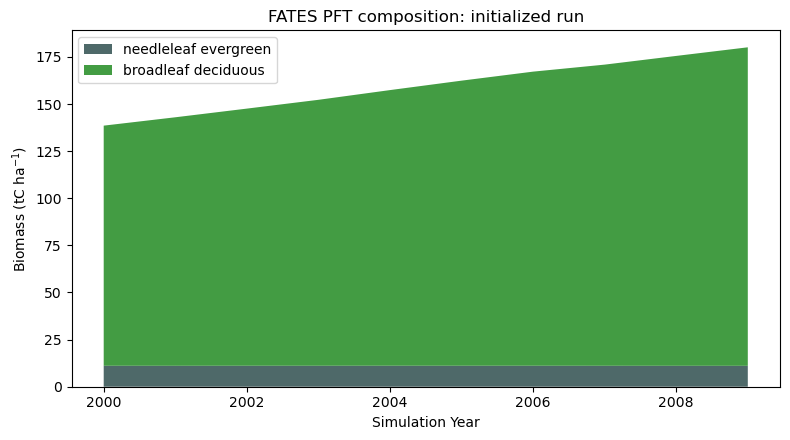
Figure: Biomass for our inventory-initialized case.
Question:#
What do you notice about this plot? Which PFT is dominating? Does that match with the site description above?
3.2 Comparison to bare-ground run#
With the above plot, we were sort of “cheating” at getting the composition right because we initialize the model with actual inventory data. Let’s also look at our bareground run and see how that compares:
vegc_bg = annual_mean(ds_bg["FATES_VEGC_PF"], 10.0) # tonnes C/ha
fig, ax = plt.subplots(figsize=(8, 4.5))
ax.stackplot(np.arange(len(vegc_bg.year)),
*[vegc_bg.sel(fates_levpft=pft).values for pft in active_pfts],
labels=[v[0] for v in active_pfts.values()],
colors=[v[1] for v in active_pfts.values()],
alpha=0.85)
ax.set(xlabel="Stand Age", ylabel="Biomass (tC ha$^{-1}$)",
title="FATES PFT composition: bareground run")
ax.legend(loc="upper left")
fig.tight_layout()
Click here for the solution
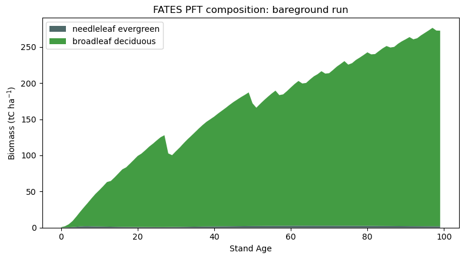
Figure: Biomass over time for the bare-ground case.
Question:#
What do you notice about the bareground run? How is it different from the inventory-initialized run?
4. Anatomy of a FATES forest#
4.1. Size structure#
So the biomass plots above show what is growing and how much carbon is there, but remember that FATES keeps track of individual cohorts of specific size, age, and PFT. This architecture is what distinguishes FATES from a more “big leaf” structure like the default CLM vegetation model.
So, let’s look at size structure of our initialized stand, using the multiplexed variable FATES_NPLANT_SZPF.
First we will “deduplex” it and then sum across the fates_levpft dimension to look at total size structure over time.
nplant = deduplex(ds_inv, ds_inv["FATES_NPLANT_SZPF"], 'scls', 'pft')
total = annual_mean(nplant.sum("fates_levpft"), 1e4) # plants/ha
total = total.sel(fates_levscls=slice(1, None)) # not really interested in 0-1 cms
edges = total["fates_levscls"].values
y_edges = np.append(edges, edges[-1] + (edges[-1] - edges[-2]))
years = total.year
x_edges = np.append(years, years[-1] + 1)
vals = total.transpose("fates_levscls", "year").values
vmin = np.nanmin(vals[vals > 0])
fig, ax = plt.subplots(figsize=(9, 5))
cmap = plt.cm.viridis.copy()
cmap.set_bad("0.92")
mesh = ax.pcolormesh(
x_edges, y_edges, np.ma.masked_less_equal(vals, 0),
norm=mcolors.LogNorm(vmin=vmin, vmax=np.nanmax(vals)),
cmap=cmap, shading="flat",
)
ax.set(xlabel="Simulation Year", ylabel="DBH Size Class (cm)",
title="FATES stand size structure")
ax.set_yticks(edges)
fig.colorbar(mesh, ax=ax, label="Stem Density (plants ha$^{-1}$)")
fig.tight_layout()
Click here for the solution
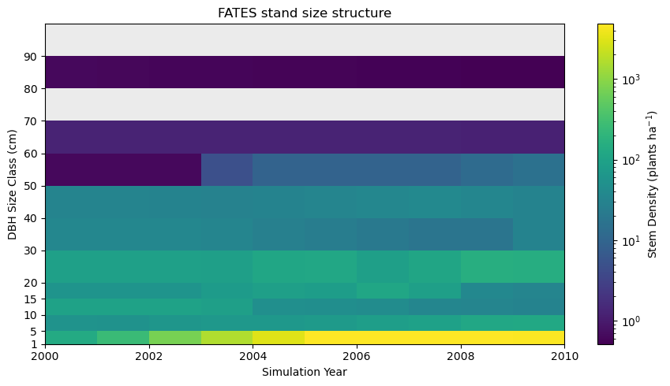
Figure: Stem density across DBH size classes (vertical) over time (horizontal), on a log color scale.
Questions:#
What do you notice about the size structure at this site?
Why do we need to use a log scale to look at this variable?
4.2. Canopy structure#
The heatmap shows how many trees of each size there are, but it doesn’t show where those trees sit in the light environment. FATES sorts every cohort into a canopy layer (crowns in full sun) or one of several understory layers (layers shaded beneath), following the Perfect Plasticity Approximation (see more here).
Splitting the same size distribution by layer turns the heatmap into a canopy pyramid.
We will first grab the variable FATES_NPLANT_CANOPY_SZPF, which is the number of plants in the top-most canopy layer, indexed by size and pft, as well as FATES_NPLANT_USTORY_SZPF, which is the same variable but for the understory layers.
As before, we will “deduplex” these variables, sum by PFT, and take the annual mean, then remove the smallest size class.
We will then plot the first year.
# canopy plants
canopy = annual_mean(deduplex(ds_inv, ds_inv["FATES_NPLANT_CANOPY_SZPF"], 'scls', 'pft').sum("fates_levpft"), 1e4)
canopy = canopy.sel(fates_levscls=slice(1, None))
# understory plants
ustory = annual_mean(deduplex(ds_inv, ds_inv["FATES_NPLANT_USTORY_SZPF"], 'scls', 'pft').sum("fates_levpft"), 1e4)
ustory = ustory.sel(fates_levscls=slice(1, None))
# helper function for drawing a canopy/size class pyramid at a specific year
def draw_pyramid(ax, ustory, canopy, scls_labels, yr):
"""Mirrored size pyramid at year index yr: understory left, canopy right."""
ax.barh(y, -ustory.isel(year=yr).values, height=0.85,
color=LAYER_COLORS["understory"], label="understory")
ax.barh(y, canopy.isel(year=yr).values, height=0.85,
color=LAYER_COLORS["canopy"], label="canopy")
ax.axvline(0, color="0.3", lw=0.8)
ax.set_yticks(y)
ax.set_yticklabels(scls_labels, fontsize=8)
edges = ustory["fates_levscls"].values
scls_labels = [f"{int(edges[i])}–{int(edges[i+1])}" if i+1 < len(edges)
else f"{int(edges[i])}+" for i in range(len(edges))]
LAYER_COLORS = {"understory": "#9CA86E", "canopy": "#2E6E5E"}
y = np.arange(len(edges))
xmax = max(ustory.max(), canopy.max())
fig, ax = plt.subplots(figsize=(7, 5))
draw_pyramid(ax, ustory, canopy, scls_labels, 0) # plotting .isel(year=0)
ax.set_xscale("symlog", linthresh=10)
ax.set_xlim(-xmax * 1.05, xmax * 1.05)
ticks = ax.xaxis.get_major_locator().tick_values(0, xmax)
ax.set_xticks(np.concatenate([-ticks, ticks]))
ax.xaxis.set_major_formatter(FuncFormatter(lambda x, _: f"{abs(x):g}"))
ax.set(xlabel="Stem Density (plants ha$^{-1}$)", ylabel="DBH size class (cm)",
title="Canopy vs. understory size structure")
ax.legend(loc="upper left")
fig.tight_layout()
Click here for the solution
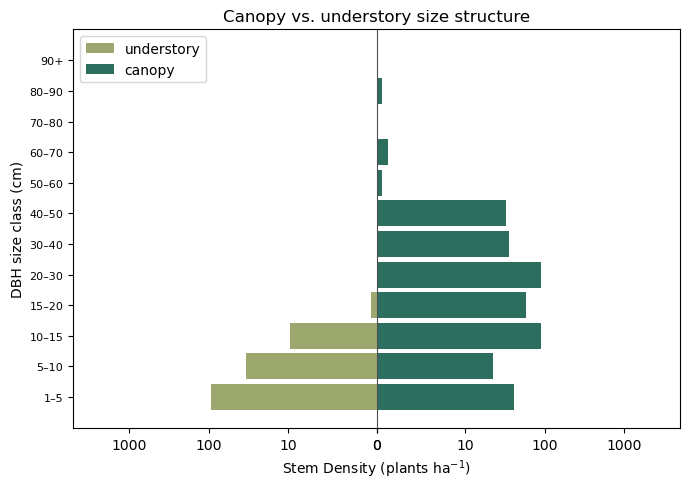
Figure: The size distribution split by canopy layer: understory stems to the left, canopy to the right.
Questions:#
How do the distributions differ between the sizes of the canopy and understory trees?
Why are there some really small canopy trees?
4.3 Layered LAI#
The same canopy vs. understory split can also be seen in the forest’s leaf area. We can separate LAI by its layer just as we did with stems.
For this plot we will look at the FATES_LAI_CANOPY_SZ and FATES_LAI_USTORY_SZ variables, which are LAI indexed by size class for the canopy (top-most) and understory (lower) layers.
We don’t really care about the size class, so we will just sum across that index by doing .sum(dim='fates_levscls').
To look at peak LAI for the year we will use the .groupby method and take the maximum value:
lai_can = ds_inv.FATES_LAI_CANOPY_SZ.sum(dim='fates_levscls')
lai_ust = ds_inv.FATES_LAI_USTORY_SZ.sum(dim='fates_levscls')
peak_can = lai_can.groupby("time.year").max()
peak_ust = lai_ust.groupby("time.year").max()
Then we will just grab the first year’s data to plot:
peak_ust_year = peak_ust.values[0]
peak_can_year = peak_can.values[0]
year = [str(years[0].values)]
fig, ax = plt.subplots(figsize=(2.5, 4.5))
ax.bar(0, peak_ust_year, color=LAYER_COLORS["understory"], label="understory")
ax.bar(0, peak_can_year, bottom=peak_ust_year,
color=LAYER_COLORS["canopy"], label="canopy")
ax.set_xticks([0])
ax.set_xticklabels(year)
ax.set_ylabel("Annual Maximum LAI (m$^2$ m$^{-2}$)")
ax.set_title("Layered LAI")
handles, labels = ax.get_legend_handles_labels()
ax.legend(handles[::-1], labels[::-1], loc="center left",
bbox_to_anchor=(1.02, 0.5));
Click here for the solution
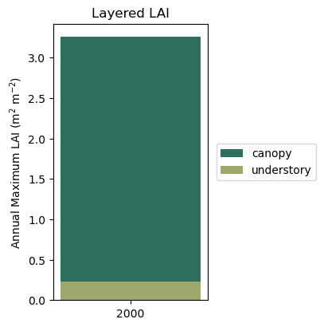
Figure: Leaf area index partitioned into canopy and understory layers.
LAI over time#
One of the more interesting things about FATES is that you can see successional dynamics over time. In a forest landscape, we should see a difference between early-, mid-, and late-successional stands in terms of composition and structure. Let’s take a look at how LAI and the canopy structure evolves for our bare-ground case.
This time we will plot monthly LAI over time (rather than peak annual) so we can take a look at the sub-annual dynamics.
tyear = ds_bg["time"].dt.year + (ds_bg["time"].dt.month - 1) / 12
stand_age = tyear - tyear.min()
lai_can_bg = ds_bg.FATES_LAI_CANOPY_SZ.sum(dim='fates_levscls')
lai_ust_bg = ds_bg.FATES_LAI_USTORY_SZ.sum(dim='fates_levscls')
fig, axes = plt.subplots(1, 3, figsize=(14, 4.3), sharey=True)
windows = [(0, 9, "Early stand"), (20, 29, "Mid-successional"), (90, 99, "Old growth")]
for ax, (y0, y1, title) in zip(axes, windows):
ax.stackplot(stand_age.values, lai_ust_bg.values, lai_can_bg.values,
labels=["understory", "canopy"],
colors=[LAYER_COLORS["understory"], LAYER_COLORS["canopy"]], alpha=0.9)
ax.set_xlim(y0, y1)
ax.set_title(title, fontsize=10)
ax.set_xlabel("Stand Age (years)")
ax.margins(x=0)
axes[0].set_ylabel("LAI (m$^2$ m$^{-2}$)")
handles, labels = ax.get_legend_handles_labels()
ax.legend(handles[::-1], labels[::-1], loc="center left",
bbox_to_anchor=(1.02, 0.5))
fig.suptitle("Layered LAI over time", y=1.03)
fig.tight_layout()
Click here for the solution
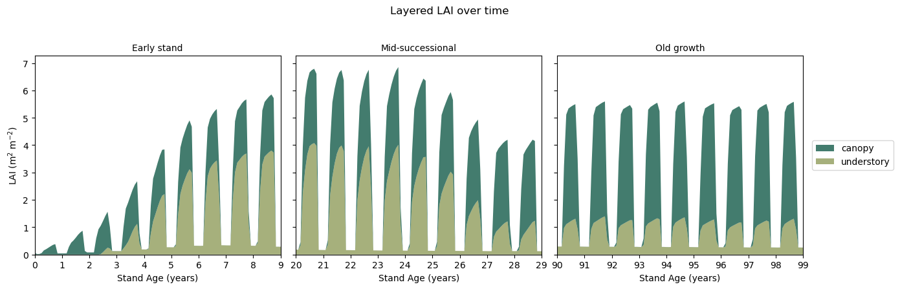
Figure: Monthly leaf area index partitioned into canopy and understory layers over time at three different snapshots: early-, mid-, and late-successional.
Questions:#
What do you notice happening over time at this site?
What are the major differences between the early-, mid-, and late-successional stands?
How does the bare-ground case differ from our single-year plot using the inventory-initialized stand?
5. Demographic Processes#
5.1. Canopy Layer Promotion and Demotion#
The processes that drive the LAI-over-time plot above include phenology, growth, mortality (plant death from a variety of factors), and recruitment (new trees establishing). As these play out, FATES continually re-sorts trees between canopy layers (promotion and demotion). Together these are the core of how FATES simulates succession, competition, and vegetation dynamics.
To compare to our LAI plot above, let’s first look at two useful variables: FATES_PROMOTION_RATE_SZ and FATES_DEMOTION_RATE_SZ. These are the fluxes (in plants m\(^{-2}\) yr\(^{-1}\)) from the a lower to higher canopy layer (PROMOTION) and from a higher to a lower canopy layer (DEMOTION).
Under PPA, trees fill the canopy from the top down by height, occupying space until total crown area equals the patch area (i.e., canopy closure). Beyond that point there’s no room left in the layer, so the lowest-ranked trees are demoted into a lower, shaded understory layer. Conversely, when a tree dies and opens a gap, its layer is no longer full, and the tallest trees from below are promoted up to fill it.
Let’s look at these two variables, focusing again on those three windows of time in our bareground run.
promo = annual_mean(ds_bg["FATES_PROMOTION_RATE_SZ"].sum("fates_levscls"), 1e4)
demo = annual_mean(ds_bg["FATES_DEMOTION_RATE_SZ"].sum("fates_levscls"), 1e4)
stand_age = promo.year - promo.year.min()
FLUX_COLORS = {"promotion": "#3A7CA5",
"demotion": "#D98A3D"}
fig, axes = plt.subplots(1, 3, figsize=(14, 4.3), sharey=True)
windows = [(0, 9, "Early stand"), (20, 29, "Mid-successional"), (90, 99, "Old growth")]
for ax, (y0, y1, title) in zip(axes, windows):
ax.fill_between(stand_age.values, 0, promo.values,
color=FLUX_COLORS["promotion"], alpha=0.85,
label="promotion")
ax.fill_between(stand_age.values, 0, -demo.values,
color=FLUX_COLORS["demotion"], alpha=0.85,
label="demotion")
ax.axhline(0, color="0.3", lw=1)
ax.set_xlim(y0, y1)
ax.set_title(title, fontsize=10)
ax.set_xlabel("Stand Age (years)")
ax.margins(x=0)
ax.yaxis.set_major_formatter(FuncFormatter(lambda v, _: f"{abs(v):g}"))
axes[0].set_ylabel("Layer Flux (plants ha$^{-1}$ yr$^{-1}$)")
handles, labels = ax.get_legend_handles_labels()
ax.legend(handles[::-1], labels[::-1], loc="center left",
bbox_to_anchor=(1.02, 0.5))
fig.tight_layout()
Click here for the solution
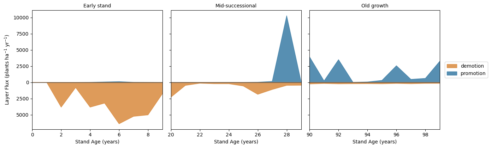
Figure: Fluxes between canopy layers at three different snapshots: early-, mid-, and late-successional.
Questions:#
What do you notice happening over time with the promotion and demotion fluxes?
Looking side-by-side with LAI over time, can you explain what is going on?
5.2. Growth and Mortality#
Diameter Growth#
So, as stated, the drivers of these promotion and demotion fluxes are growth and mortality of individual cohorts. We can investigate growth over time using the FATES_DDBH_SZPF variable, which shows the diameter increment growth of cohorts, weighted by the number of plants. We can un-normalize it using FATES_NPLANT_SZPF.
ddbh = deduplex(ds_bg, ds_bg["FATES_DDBH_SZPF"], 'scls', 'pft').sum("fates_levpft")*100.0 # cm/m2/yr
nplant = deduplex(ds_bg, ds_bg["FATES_NPLANT_SZPF"], 'scls', 'pft').sum("fates_levpft")
# un-normalize and take annual average
dbh_growth = annual_mean(xr.where(nplant > 0.0, ddbh / nplant, np.nan)).sel(fates_levscls=slice(1, None))
Mortality#
We can also investigate mortality in FATES. FATES outputs mortality by size class (plants m\(^{-2}\) yr\(^{-1}\)) for all of the different causes of mortality:
background: background, “random” mortality; should be a static rate (
FATES_MORTALITY_BACKGROUND_SZ)freezing: mortality due to cold intolerance (
FATES_MORTALITY_FREEZING_SZ)carbon starvation: mortality due to low growth (
FATES_MORTALITY_CSTARV_SZ)hydraulic failure: mortality from moisture stress and/or cavitation (
FATES_MORTALITY_HYDRAULIC_SZ)impact: mortality from getting hit by a falling tree (
FATES_MORTALITY_IMPACT_SZ)termination: forced mortality from when a cohort gets too small in number density (
FATES_MORTALITY_TERMINATION_SZ)
There is also a FATES_MORTALITY_SENESCENCE_SZ output, which is mortality due to age- or size-related “senescence”. But for these runs we have turned this feature off.
MORT_VARS = {
"background": "FATES_MORTALITY_BACKGROUND_SZ",
"freezing": "FATES_MORTALITY_FREEZING_SZ",
"carbon starvation": "FATES_MORTALITY_CSTARV_SZ",
"hydraulic failure": "FATES_MORTALITY_HYDRAULIC_SZ",
"impact": "FATES_MORTALITY_IMPACT_SZ",
"termination": "FATES_MORTALITY_TERMINATION_SZ",
}
mort = sum(annual_mean(ds_bg[v], 1e4) for v in MORT_VARS.values()).sel(fates_levscls=slice(1, None))
# helper function for plotting heatmap of size over time
def size_time_heat(ax, da, cmap, label, title, vmin=None, vmax=None, norm=None):
stand_age = da.year - da.year.min()
e = da["fates_levscls"].values
y_edges = np.append(e, e[-1] + (e[-1] - e[-2]))
x_edges = np.append(stand_age.values, stand_age.values[-1] + 1)
vals = da.transpose("fates_levscls", "year").values
cm = plt.get_cmap(cmap).copy()
cm.set_bad("0.92")
m = ax.pcolormesh(x_edges, y_edges, np.ma.masked_invalid(vals),
cmap=cm, shading="flat", vmin=vmin, vmax=vmax,
norm=norm)
ax.set(xlabel="Stand Age", title=title)
ax.set_yticks(e)
plt.colorbar(m, ax=ax, label=label)
# just grab DBH size classes that are occupied
keep = dbh_growth.notnull().any("year")
dbh_growth_keep = dbh_growth.isel(fates_levscls=keep)
mort_keep = mort.isel(fates_levscls=keep)
# plot growth and mortality side by side
fig, (a0, a1) = plt.subplots(1, 2, figsize=(13, 5), sharey=True)
size_time_heat(a0, dbh_growth_keep, "magma",
"Diameter Increment (cm yr$^{-1}$)", "Growth", vmin=0.0, vmax=0.5)
mort_keep = mort_keep.where(mort_keep > 0)
vals = mort_keep.values
pos = vals[np.isfinite(vals) & (vals > 0)]
norm = mcolors.LogNorm(vmin=vmin, vmax=np.nanmax(vals))
size_time_heat(a1, mort_keep, "magma", "Mortality (plants ha$^{-1}$ yr$^{-1}$)",
"Mortality", norm=norm)
a0.set_ylabel("DBH Size Class (cm)")
fig.tight_layout()
Click here for the solution
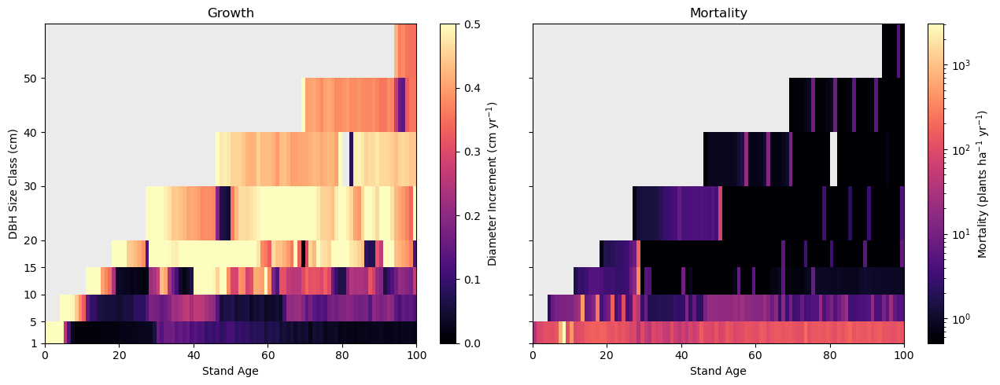
Figure: Growth (left) and mortality (right) by size class over time.
Questions:#
How does diameter growth change with size class?
Where (which size classes) and when do the largest diameter growths occur?
How does mortality change over time and with size class?
Mortality by cause#
We can also look at the causes of mortality in FATES:
mort_by_cause = {label: ds_bg[v].sel(fates_levscls=slice(1, None)).sum("fates_levscls")
for label, v in MORT_VARS.items()}
mort_annual = {k: annual_mean(v, 1e4) for k, v in mort_by_cause.items()}
years = next(iter(mort_annual.values()))["year"].values
stand_age = years - years.min()
CAUSE_COLORS = {
"background": "#7f7f7f",
"freezing": "#4C72B0",
"carbon starvation": "#DD8452",
"hydraulic failure": "#C44E52",
"impact": "#8172B3",
"termination": "#CCB974",
}
order = [k for k in CAUSE_COLORS if k in mort_annual]
fig, ax = plt.subplots(figsize=(10, 5))
ax.stackplot(stand_age, *[mort_annual[k].values for k in order], labels=order,
colors=[CAUSE_COLORS[k] for k in order], alpha=0.9)
ax.set(xlabel="Stand Age", ylabel="Mortality (plants ha$^{-1}$ yr$^{-1}$)",
title="Mortality partitioned by cause")
ax.legend(loc="upper right", fontsize=8, ncol=2)
ax.margins(x=0)
fig.tight_layout()
Click here for the solution
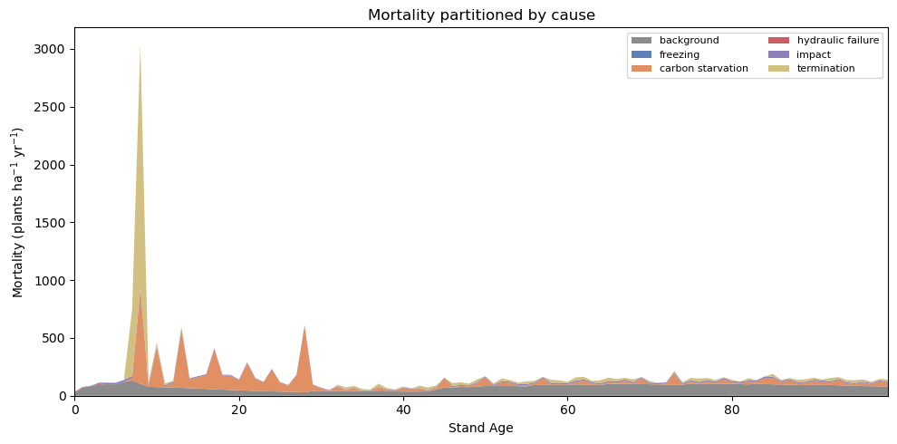
Figure: Mortality over time by cause.
Questions:#
What is the dominant cause of mortality at BART?
Does this change over time?
Snapshots of Mortality#
Let’s look at those snapshots again, but instead of LAI or promotion/demotion fluxes, lets look at the same plot as above:
fig, axes = plt.subplots(1, 3, figsize=(14, 4.3))
windows = [(0, 9, "Early stand"), (20, 29, "Mid-successional"), (90, 99, "Old growth")]
for ax, (y0, y1, title) in zip(axes, windows):
ax.stackplot(stand_age, *[mort_annual[k].values for k in order],
labels=order, colors=[CAUSE_COLORS[k] for k in order],
alpha=0.9)
ax.set_xlim(y0, y1)
ax.set_title(title, fontsize=10)
ax.set_xlabel("Stand Age (years)")
ax.margins(x=0)
axes[0].set_ylabel("Mortality (plants ha$^{-1}$ yr$^{-1}$)")
handles, labels = ax.get_legend_handles_labels()
ax.legend(handles[::-1], labels[::-1], loc="center left",
bbox_to_anchor=(1.02, 0.5))
fig.tight_layout()
Click here for the solution
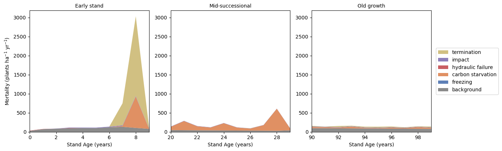
Figure: Mortality over time by cause: snapshots in time.
Questions:#
What is happening in each snapshot?
Comparing to the LAI and promotion/demotion fluxes figures, can you formulate a story for what is going on?
6. A forest landscape through succession#
So far we’ve looked at the stand as a whole. In this final section we will step back in two ways: first to see how the causes of mortality differentially impact cohorts of different sizes, and as a stand ages, and then to the landscape scale, where FATES represents the site not as one forest but as a mosaic of patches of different ages.
6.1. Mortality causes over time#
Interestingly, FATES can also show us the causes of mortality across time and for different size structures. Here we plot three snapshots again (early-, mid-, and late-successional) and plot the fraction of mortality for each cause by size class.
mort_by_size = {label: ds_bg[v].sel(fates_levscls=slice(1, None))
for label, v in MORT_VARS.items()}
mort_annual_bysize = {k: annual_mean(v, 1e4) for k, v in mort_by_size.items()}
# helper function for plotting mortality by size class
def window_stack(y1, y2, mort_annual):
y0 = int(mort_annual[order[0]]["year"].values[0])
M = np.vstack([mort_annual[k].sel(year=slice(y0+y1, y0+y2)).mean("year").values for k in order])
tot = M.sum(axis=0)
frac = np.divide(M, tot, out=np.full_like(M, np.nan), where=tot > 0)
return frac
windows = {"Early stand": (0, 9), "Mid-successional": (20, 29), "Old growth": (90, 99)}
order = [k for k in CAUSE_COLORS if k in mort_by_size]
edges = mort_by_size[order[0]]["fates_levscls"].values
labels = [f"{int(edges[i])} – {int(edges[i+1])}" if i+1 < len(edges)
else f"{int(edges[i])}+" for i in range(len(edges))]
fig, axes = plt.subplots(1, 3, figsize=(14, 6), sharey=True)
for ax, (name, (y1, y2)) in zip(axes, windows.items()):
frac = window_stack(y1, y2, mort_annual_bysize)
left = np.zeros(len(edges))
for ci, k in enumerate(order):
ax.barh(y, np.nan_to_num(frac[ci]), left=left, height=0.8,
color=CAUSE_COLORS[k], label=k)
left = left + np.nan_to_num(frac[ci])
ax.set(xlabel="Fraction of Mortality", title=name, xlim=(0, 1))
axes[0].set_yticks(y)
axes[0].set_yticklabels(labels, fontsize=8)
axes[0].set_ylabel("DBH Size Class (cm)")
axes[-1].legend(fontsize=8, framealpha=0.95, loc="center left",
bbox_to_anchor=(1.02, 0.5))
fig.tight_layout()
Click here for the solution
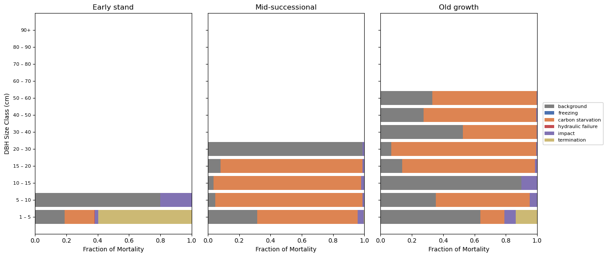
Figure: Mortality at three different stand ages and by size class.
Questions:#
Within a given size class, which cause dominates mortality? Is it the same across most size classes?
Do any causes appear only in the smallest size classes? Why?
Comparing the three stand ages, does the cause composition change much with succession, or mostly stay the same?
6.2. The patch mosaic#
Every plot so far has treated BART as a single stand, but FATES actually represents each gridcell as a mosaic of patches, each at a different time since it was last disturbed. When a canopy tree dies it can open a gap and start a new, younger patch. Undisturbed patches age and their canopies close. The gridcell-level numbers we’ve been plotting are area-weighted averages over this shifting distribution of patch ages. The plot below shows how the site’s area is partitioned among patch-age classes as the forest develops.
patch_area = ds_bg["FATES_PATCHAREA_AP"].sel(fates_levage=slice(0, 100)) # we only allowed the forest to run for 100 years
edges = patch_area.fates_levage.values
na = len(edges)
labels = [f"{int(edges[i])}–{int(edges[i+1])}" if i+1 < na else f"{int(edges[i])}+"
for i in range(na)]
colors = cm.YlGn(np.linspace(0.25, 0.95, na))
tyear = ds_bg["time"].dt.year + (ds_bg["time"].dt.month - 1) / 12
stand_age = tyear - tyear.min()
fig, ax = plt.subplots(1, 1, figsize=(7, 5))
ax.stackplot(stand_age.values, *[patch_area.isel(fates_levage=i).values for i in range(na)],
colors=colors, labels=[f"{l} yr" for l in labels])
ax.set(xlabel="Stand Age", ylabel="Patch Area (fraction of site)")
ax.margins(x=0)
ax.set_ylim(0, 1.0)
ax.legend(loc="center left", fontsize=7, title="Patch Age",
ncol=2, bbox_to_anchor=(1.02, 0.5))
Click here for the solution
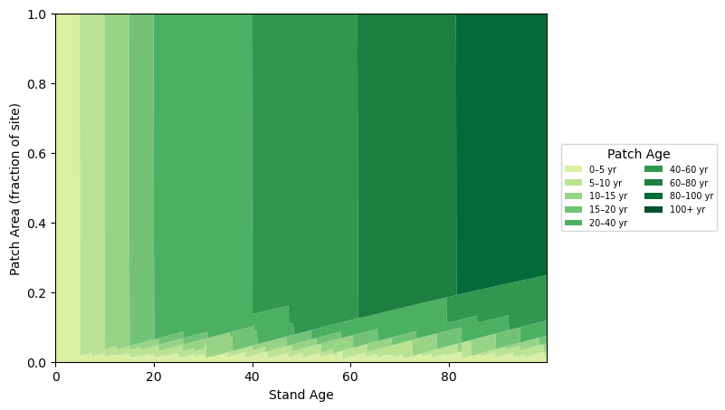
Figure: Patch area over time and across different patch ages.
Questions:#
Early in the run, which patch-age class holds nearly all of the site’s area? Why does that make sense for a bare-ground start?
Does a fraction of young-patch area persist even late in the run? Since there’s no fire or harvest in this simulation, where do new young patches keep coming from?
7. Next Steps#
As you can see, FATES demography can result in a lot of complicated ways to visualize a forest stand over time. Feel free to explore some other history variables or other plotting methods. You can see what variables are available to look at by looking at the ds_bg.data_vars or ds_inv.data_vars.
In most of our plots, we only looked at things organized by size class (_SZ), even though there were many variables that were indexed by size and PFT (_SZPF). As a challenge, can you explore these history variables, but comparing PFT and/or size and PFT?